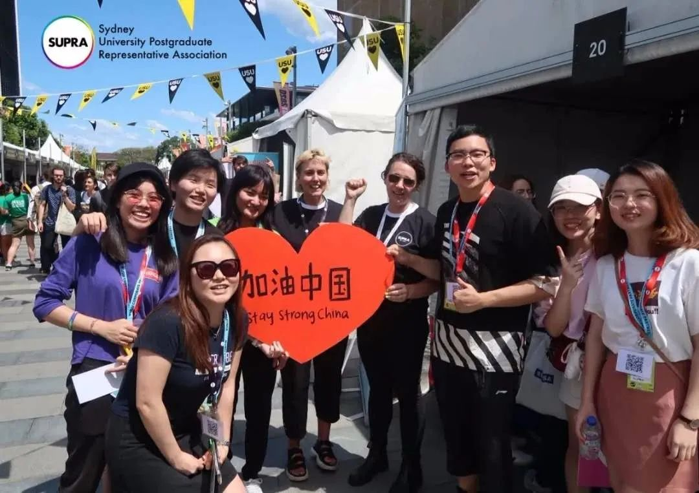
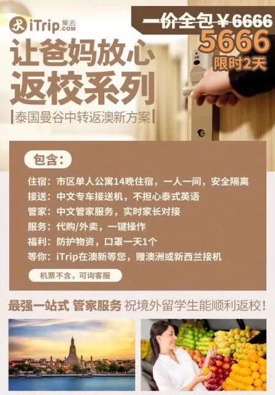
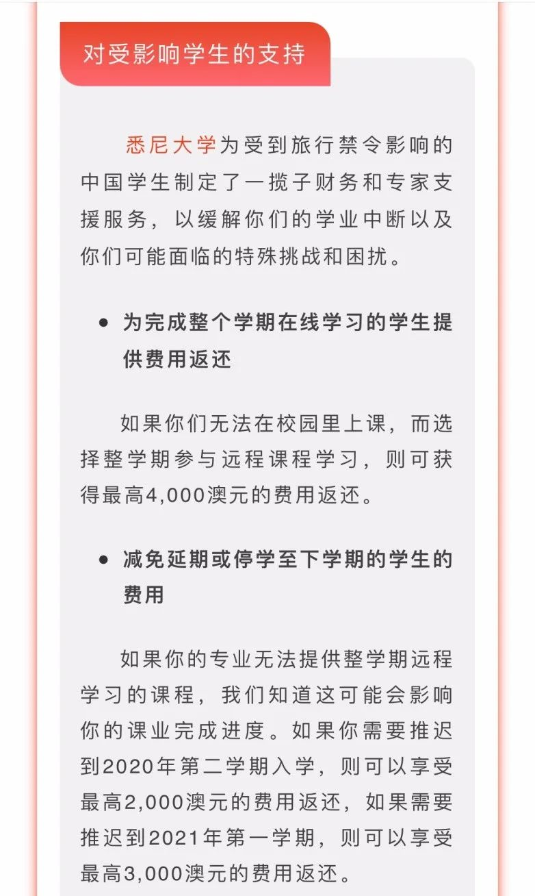

几十万学费变成了买网课，被疫情阻断的留学路
原文链接 备份链接 大学的意义，不仅仅在于一节节课程，还在于学校提供的各种公共教学设施和公共生活空间。学生们身体的不在场，不可避免地让大学的意义变得模糊。 文 | 田蔚琪 陈星萌 林浩瑶 编辑 | 小豆 二月底本是澳洲大学秋季开学的日子， …

部分同学在禁令颁布之初就开始四处搜罗免签国的消息，准备“曲线入境”。泰国、阿联酋等签证手续简便并且当时暂未限制中国人入境的亚洲临近国家成为了这些留学生们的首选。
口述 | D
**整理 | 王仲昀
**
这场影响全球的疫情打乱了我和身边很多同学的计划。
我是北京某高校一名大三学生。周围很多同学跟我一样，经过前两年国内的学习，在大三时想要去境外交流半年或者一年。但当我们终于在去年下半年完成语言考试、申请、面试、租房、体检、签证等一系列繁杂的手续后，疫情爆发了。
按照计划，我现在应该已经在悉尼大学交换近一个月了。但澳大利亚政府于2月1日颁布了旅行禁令，禁止所有曾在“中国内地”逗留的人入境，除非此人是澳大利亚公民、永久居民或其直系亲属。所以我的航班被取消，预付了房租的住处也无法如期入住。直到现在，我还留在老家。交换的学校去不成，北京的本校也回不了，只好在家上本校的网课。
我的同学中，有人庆幸自己去得早才没受到影响，有人申请签证至今杳无音信，还有人出境交换项目被直接取消，大家都有自己的疑惑。

图 | 悉尼大学研究生会
悉尼大学已经按时开学，我们这些受旅行限制影响的中国内地学生不得不根据个人情况做出选择。
一种是在3月31日以前申请休学或延期入学。休学针对的是高年级学生，延期入学针对的是新生。如果学生无法在2020年3月30日之前到达澳大利亚并开始在校园内学习，就应办理休学半年或一年的手续，然后在下学期或明年复学（取决于所学专业），学校免收手续费。这是学校最早提出的一种解决方案，前期申请休学或延期十分简便，但是2月下旬以来申请的手续变得复杂，需要提交更多的证明签证状态的材料，受理等待时间也更长。
另一种选择是在家上前五周或整个学期的网课，每个悉大的学生可以试学一段时间，到3月底之前再决定要不要继续。澳洲的部分高校一开始只通知让学生休学，不提供网课，但在许多学生的强烈要求下增设了远程学习班并不断拓展网课的涵盖范围。假如学生持乐观预期，预计入境限制将会松动或者自己能在3月30日之前到校，可以只参加部分学期（前五周）的网课，到校后完成剩余实体课和考试。如果学生持悲观预期，预计自己不太可能到校并在3月30日之前完成14天的自我隔离，可以留在中国上一整个学期的网课，还可以在寒暑假小学期参加悉大增开的密排强化课程来弥补不提供远程教学的部分特殊类型课程（比如理工实验、实地调研等）。
还有一种选择是从第三国隔离14天后入境。澳洲政府颁布禁令后，由于其字面上仅限制了从中国内地直接出发的旅行，一些急于返校的学生想到了绕道第三国停留14天再从该国入境澳洲的方法。一些精明的旅行社嗅到商机，将其做成生意。
为了按时到校上课，部分焦急的同学尝试了这种方法。他们中的很多人是应届毕业生或高年级硕士博士，无法按时毕业将会影响到他们继续深造、实习应聘、职业资格考试等方面的个人规划，休学的时间成本对他们而言过于高昂，远程学习和线上招聘的不确定因素也很多。因此，这部分同学在禁令颁布之初就开始四处搜罗免签国的消息，准备“曲线入境”。泰国、阿联酋等签证手续简便并且当时暂未限制中国人入境的亚洲临近国家成为了这些留学生们的首选。
或许是中国在澳洲留学的学生非常多的缘故，有人在这个入境方案里看到了商机。“让爸妈放心返校系列：一价全包，5666，限时2天”禁令发布后，在中国的澳大利亚与新西兰留学圈子中，出现了类似这样的广告。

我在家考虑了一周，觉得这种跨境的网课会受到各种影响，学习效果不会很好，性价比也较低；另一方面，随着疫情在全球扩散，在免签国和交通工具上的感染风险可能比国内还高，医疗物资产能和社会防护意识也不及国内，而且第三国曲线入境会造成不必要的食宿交通开支。最后，我主动选择了延期，打算等疫情结束后重新办签证、租房子，争取明年2月再去悉尼大学。
现在，禁令还没有解除，不过在学生组织和校友的坚持下，悉尼大学已经在3月6日发布了关于受到旅行禁令影响的中国学生的补贴声明。声明里说，学校会根据个人情况发放不同程度的财务补贴。

现在情况变成这样，像我这样的学生多少会有点遗憾，毕竟前期准备还是挺麻烦的，语言考试、办签证、租房、体检，各种手续。好在我现在是大三，还没有到毕业季，总归是有退路的。


征集令
阳春三月，万物复苏。在抗击疫情的战斗中，我们迎来了春天，《新民周刊》也迎来了新闻线索和故事征集的第二弹。
如今，经历了一个多月休眠的城市正在逐渐苏醒，各行各业都开始有序复工复产。
不论您是企业老板、管理者，还是普通员工；又或者，您是老师、家长，还是学生本人……我们希望了解复工复产复学过程中的困难，或暖心故事。
如果你是抗疫一线的医生护士，疫情期间拍下了珍贵的摄影作品，也欢迎联系我们投稿。
当然，抗击新冠肺炎疫情的相关故事，我们仍然欢迎。
希望广大读者朋友，提供相关线索，说出你的故事，让我们用新闻留存这一切。
《新民周刊》新冠肺炎线索征集值班编辑联系方式（添加时请简要自我介绍）：
周一：应 琛 微信号：paulineying0127
周二：金 姬 微信号：gepetta
周三：黄 祺 微信号：shewen-2020
周四：周 洁 微信号：asyouasyou
周五：孔冰欣 微信号：kbx875055141
周六：吴 雪 微信号：shyshine1105
周日：姜浩峰 微信号：jianggeladandong
✳如你需要捐赠物资，可与以下两位工作人员联系:王勇：WangYong-SH 吴轶君：rommy150708（添加时请注明“捐物资”，方便工作人员快速通过您的申请，谢谢。）
新闻是历史的底稿，你们是历史的见证者。期待你的故事、你的线索！

▼
大家还都在看这些
▼
新民周刊所有平台稿件， 未经正式授权
一律不得转载、出版、改编或进行
与新民周刊版权相关的其他行为，违者必究


原文链接 备份链接 大学的意义，不仅仅在于一节节课程，还在于学校提供的各种公共教学设施和公共生活空间。学生们身体的不在场，不可避免地让大学的意义变得模糊。 文 | 田蔚琪 陈星萌 林浩瑶 编辑 | 小豆 二月底本是澳洲大学秋季开学的日子， …
原文链接 备份链接 春节结束，学生本该开始上课，但新冠病毒仍在肆虐。教育部发文《利用网络平台“停课不停学”》，各地学校纷纷开通在线课堂，但也因此引发不少问题，老师感慨不想当主播，同学无奈不想上网课。 除了国内学子面临“失学”问题，海外留学 …
原文链接 备份链接 以下文章来源于界面教育 ，作者柳书琪 [界面教育 独立思考 读懂教育 | 界面·财联社旗下教育频道](#) 图片来源：视觉中国 记者: 柳书琪 “ 无论是曲线返校，还是网课或延期入学，对留学生而言都意味着不菲的成本。 …
原文链接 备份链接 全文共4060字，阅读大约需要10分钟。 此刻，这所闻名川渝的学校空空荡荡，数千名高中生仍四散在家中，等待着返校时间的确定。然而，对于分秒必争的高三学生而言，返校时间不断延后，学习和竞争却不会停歇。 这场“停课不停学” …
原文链接 备份链接 2020年春天，一场突如其来蔓延全国的新冠肺炎疫情，让这个时期变得特殊，在家学习成为主流的方式。老师纷纷变成主播，家长不得不成为督学。 然而，在线直播课究竟该如何上？很多人还是懵的。老师花式「翻车」、学生强撑精神的背 …